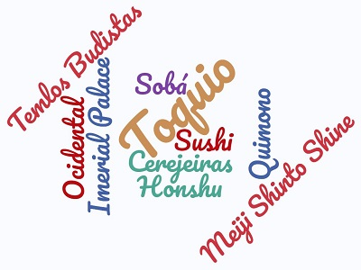

🉐 Tóquio 🉐

Quizz | Comentários | Home | Introdução | Localização | Multimédia | Informação
Introdução
O Japão é um arquipélago com 6.852 ilhas, sendo as maiores: Honshu, Hokkaido, Kyushu e Shikoku. A sua capital é a 🌃 de Tóquio, considerada uma das maiores metrópoles do mundo, que encanta pela preservação das suas características culturais; com os seus templos e 🏯, enquanto mantém um olhar para o futuro. O grande expoente da cultura japonesa é o 🎎 herança que data do século IV e, ainda hoje é utilizado em ocasiões especiais.[1]
Tóquio: É a cidade mais fantástica e exótica do oriente.
É o centro financeiro do Japão e possui o maior produto interno bruto do mundo do mundo.
Consegue conciliar arranha-céus gigantescos com jardins deslumbrantes.
Uma viagem a esta cidade permite-nos conhecer tradições ancestrais como: o Taiko,o O-bom, o O-shogatsu, o Kimono e as tradições mais atuais como os Animes e os Mangas.
Para uma experiência diferente e inesquecível visite a cidade das cerejeiras em flor.[2]
Tóquio: É a cidade mais fantástica e exótica do oriente.É o centro financeiro do Japão e possui o maior produto interno bruto do mundo do mundo. Consegue conciliar arranha-céus gigantescos com jardins deslumbrantes. Uma viagem a esta cidade permite-nos conhecer tradições ancestrais como: o Taiko,o O-bom, o O-shogatsu, o Kimono e as tradições mais atuais como os Animes e os Mangas.
Estrutura do Website:
- Ver outros laboratórios: Home
- Localização de Tóquio: Localização
- Descoberta de Tóquio com um video Multimédia
- Ir para a pagina principal: Pagina Principal
- Descobrir mais informação sobre Tóquio: Informação
- Quizz sobre o Tóquio: Quizz
- Escreva um comentario sobre o Website : Comentários
